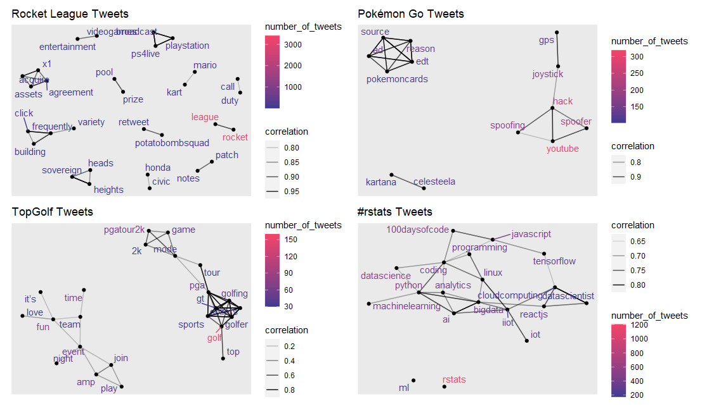

Word Correlations
The word correlations are quite unique and in this case they offer a different way to evaluate Tweets about a specific topic. This is done with a pairwise correlation, which will be able to tell us what words are “linked” together, or “Tweeted” often together.
Interpretation example:
Of all the sampled Tweets mentioning Pokémon Go, over 250 of them mentioned
YouTube, the termsSpooferandHackwhere both highly correlated( r > .8) withYouTube.
Word Correlations Visual

Because of the different parameters for each topic, the plots are quite different from each other. I wanted to show this variation because it can make this analysis very insightful, or not. This is because different variables such as the amount of data collected, the words filtered out, the word correlation filter and the number of Tweets filter can impact this type of analysis.
Rocket League Tweets
The Rocket League visual shows a great amount of data collected, but the words and connections do not tell us that much about
Rocket League. To remedy this for better insights we would need to be more selective with our words we filter.
Pokémon Go Tweets
The Pokémon Go visual is fairly good, it shows a “clearer message” than the Rocket League visual but it only shows a couple different “sub-topics”, with a lower number of Tweets about
Pokémon Go. This indicates that we can be a bit less selective with our words filtered and balance this with collecting more data.
TopGolf Tweets
The TopGolf visual is quite balanced. It was one topic that I collected less data about, and more word filtering. This visual provides a few common “themes” that Twitter users are mentioning in Tweets about
TopGolf.
#rstats Tweets
The #rstats visual is quite insightful. The number of Tweets and correlations are balanced for being able to pick up themes about the topic, and this can actually help me see what types of skills I may want to build in order to get more experience in this field and know what is popular for the
#rstatsHashtag.
Note:
I am aware that some of the text is hard to read, when each plot is rendered alone you can read the text much easier. However, for this project I had to shrink the images so they all could be “stitched” together using the
patchworkpackage, and allowing the final image to fit on the webpage. I could have showed each one rendered alone, but I think it is important to see them all stitched together so I could demonstrate the importance of thedata collectionandcleaningstages for this analysis.